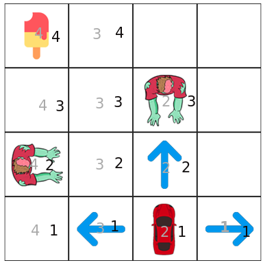

Say your a car and want to get ice cream, and also you want to avoid zombies. Which action would be best to take?

Note this is experimental: we will create two transition matrix for X and Y coordinates, X are the grey numbers and Y are the black numbers, we will combine transition matrix by adding their scores and choosing the highest one.
State that gets icecream
State that dies in zombies
Syntax: state action reward next-state
X axis scenarios
Y axis scenarios
Results: (Note: Press compute policy button multiple times until it gets the optimal policy)
X Transition matrix:
Y Transition matrix:
X+Y Transition matrix:
Per Action: syntax(x y)
As we observed our agent seems to do bad in the first states and good at areas that are near the reward using combine reduced q learning states (it likes left a lot since the reward recorded was going to the left), but its still unknown if this method would cause something unexpected later on (its like hashing a file but expect a looseless full output), this can be used optionally if we have too much states, now we know that this approach still needs work(not this was tested working on 2x2 and 6x2). next we will apply qlearning in a famous game flappy bird.
Lets use q-learning for flappy bird game